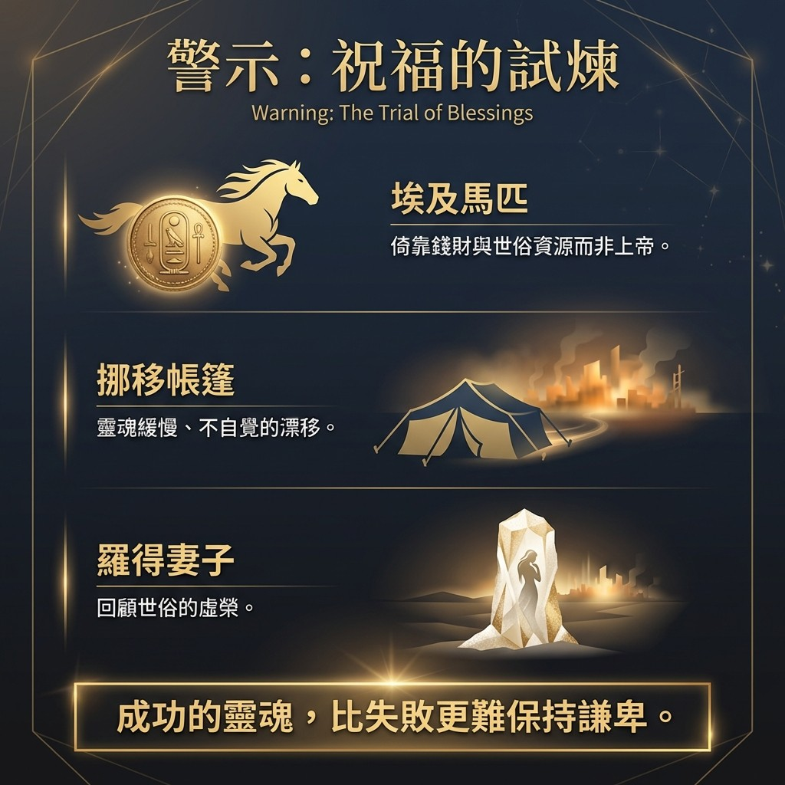

.jpg)
一、 前言：重建屬靈時空背景
孩子們，站在 2026 年新歲的門檻上，我彷彿看見你們每個人手中都握著一張未來的地圖。對於 IDO 教會的家人而言，新的一年不僅是曆法上的數字更替，更是一次屬靈目光的 「深層校準」。我們這一生，其實就是由無數個「選擇」交織而成的敘事，而每一次的抉擇，都在悄悄定義我們靈魂的重量。
讓我們將時光撥回三千多年前的以色列。那時，年僅 20 歲左右的所羅門剛剛接過父親大衛的權杖。想像一下那種泰山壓頂的焦慮：他的父親是大衛，是那位戰功彪炳、被譽為「合神心意」的傳奇君王。年輕的所羅門面對的是一群追隨大衛出生入死的勇士、老謀深算的顧問，以及如塵沙般眾多的百姓。
但他展現了超越年齡的屬靈戰略——他沒有急著發布行政命令或整軍經武，而是召集了全國的千夫長、百夫長與族長，帶領整個領導團隊前往基遍。在那裡，有摩西留下的會幕。所羅門在銅壇前獻上一千犧牲為燔祭，那一千頭牲畜的馨香之氣騰空而上，化作一個響徹雲霄的宣告：「國位的起點不在於人的謀略，而在於神的同在。」
就在那個夜晚，神在夢中向他遞出一張「屬靈空白支票」，問道：「你可以向我求一件事，無論是什麼，我都會賜給你。」孩子，如果今晚神也這樣問你，你的答案會顯露出你心底哪個部分的渴求？
二、 核心論點總結與生命要訣 (Key Takeaways)
從這段歷史文本中，我們能思索出關於「蒙福規律」的屬靈辨析。這些要訣是支撐一個健康教會與豐盛生命的基石：
- 神同在的絕對優先性： 經文說「神與他同在，使他甚為尊大」。注意這個順序：並非先有「尊大（成功）」才吸引神，而是先有「神的同在」，成功才隨之而來。
- 群體敬拜的戰略高度： 領袖的屬靈視野決定了團隊的方向。所羅門帶領眾領袖前往基遍，提醒我們信仰絕非單打獨鬥，家庭的選擇會影響整個家，教會的合一則能啟動神的應許。
- 內室禱告引發神的回應： 在眾人面前的一千祭物，引發了神在「當夜」內室中的顯現。當你願意在日常生活中付代價尋求神，祂必在寂靜中與你對話。
- 健康生命的動態平衡： 真正的智慧不是將時間「賣給」教會，而是求神全方位地參與在你的學業、職涯與家庭中，讓神的國在凡事上校準你的次序。
三、 屬靈論點綱要卡片
四、 深入解析：智慧的抉擇與使命的能力
當神給予所羅門「求什麼都行」的特權時，這其實是一場靈魂的測試。所羅門的回答揭示了智慧的三個核心維度：
- 「記得恩典」的謙卑： 他首先稱謝：「祢曾向我父大衛大施慈愛」。他不把王位視為理所當然。這種「自知不足」的感覺，是神給領袖最好的禮物。唯有知道自己有限的人，才會尋求那無限的神。
- 「專注使命」的定位： 他不求長壽或毀滅政敵，而是求「能判斷這眾多的民」。他求的是完成上帝託付之任務的能力，而非個人的自我增值。
- 「能給出去」的能力： 真正的智慧不是用來炫耀的「智商」，而是用來服事他人的「心力」。
屬靈與生命的連結： 這正是馬太福音 6:33 的具體實現。當心對準了神，資財與尊榮便成為了神的「加給」。我在海外服事時，常看見許多收入有限的年輕夫婦堅持十一奉獻。曾有未信者問他們：「不怕不夠用嗎？」他們回答：「正因為知道自己有限，才更需要相信神的供應。」
這種對神的單純信任，我在一位 樂醫生（Dr. Yueh）
身上也看見了。在過去那個動盪、信仰受迫害的年代，他曾被批鬥、被打壓，但他極其愛主，將整本聖經背誦下來藏在心裡。這種在匱乏中依然緊抓神話語、慷慨奉獻的生命，正是所羅門起初那種
「以神為中心」 的智慧體現。
五、 祝福中的試煉：警惕「挪移帳篷」到埃及
然而，這份報告必須發出一個深沉的警醒：神賜下的祝福，有時會成為最隱蔽的試煉。
聖經記載所羅門後期的墮落，起點竟是從「埃及」買馬。根據申命記 17 章的嚴厲警告，王不可加添馬匹，更不可使百姓「回埃及去」。
- 埃及馬匹的現代隱喻： 在 2026 年，這代表了對世俗資源、技術依賴或即時滿足的過度崇拜。當你擁有了高薪工作、成功事業，你是否開始倚靠自己的「銀行數字（馬匹）」而非恩典的源頭？
- 挪移帳篷的危險： 羅得的失敗，源於他「挪移帳篷」直到所多瑪。這是一個緩慢且不自覺的過程。所羅門也是如此，從政治聯姻開始，一步步引進了外邦的神靈。
- 羅得妻子的借鏡： 財富與成功常讓人不自覺地「回頭看」那些世俗的派對與名牌，正如羅得妻子留戀所多瑪。當心留戀世俗時，即便身體逃出了城，靈魂也會變成一根僵死的鹽柱。
孩子們，我們必須警醒：成功的靈魂，比失敗的靈魂更難保持謙卑。
真正的豐盛是讓孩子認識神，而非只求他們學業拔尖。比起世俗的成就，我們更應為家人的靈魂能「定居在神的殿中」而代禱。

六、 講道精華：屬靈辨析清單
以下是本次分享的技術性提煉，請將其帶入你的靈修時間：
| 屬靈洞察要點 |
|---|
| 20 歲的所羅門在重壓下選擇前往基遍。強調「神同在」是所有成功的先決條件，領袖必須帶著團隊群體尋求神。 |
| 解析「一千犧牲」的奉獻意義。分享樂醫生在迫害中背誦經文與十一奉獻的見證，強調「讓神參與人生」是蒙福之始。 |
| 智慧不是自私的求取，而是「給出去」服事百姓的能力。重申馬太福音 6:33 的優先次序：先求國與義。 |
| 分析申命記 17 章對「埃及馬匹」的警告。提醒信徒在 2026 年的壓力與誘惑中，要防範「挪移帳篷」式的心靈墮落。 |
七、 結語與回應禱告
孩子，真正的智慧並非一次性的領悟，而是每日清晨醒來時，再次選擇用神的眼光來校準生命。所羅門的故事是一個輝煌的開端，也是一個長鳴的警鐘。在 2026 年，無論你正面對學業的瓶頸、職場的廝殺或育兒的疲累，請記得，神依然在問你：「你可以向我求，你要我賜你什麼？」 願你的回答，能讓神的心得著滿足。
【結束代禱】
親愛的天父，求祢發出祢的亮光與真實，親自引領我們每一位弟兄姊妹。主啊，帶領我們離開世俗的紛擾，來到祢的聖山，進入祢的居所。
主啊，我們承認自己的有限，承認我們常被 2026 年的節奏帶偏了目光。求祢賜下所羅門起初那種謙卑的智慧， 使我們在學業中保持喜樂，在職涯中堅持正直，在家庭中傳承信仰。 求祢保守我們的心，使我們在祢賜下的豐富中，依然能緊緊抓住祢，而非緊緊抓著祝福不放。
讓我們不流連「埃及」的馬匹， 也不像羅得妻子般回頭眷戀那虛浮的榮華。 主啊，唯有祢是我們一生的追尋，是我們心的嚮往。我們立志在這新的一年，將生命對準祢的國度，一生一世跟隨到底。
奉主耶穌基督聖名禱告，阿們。